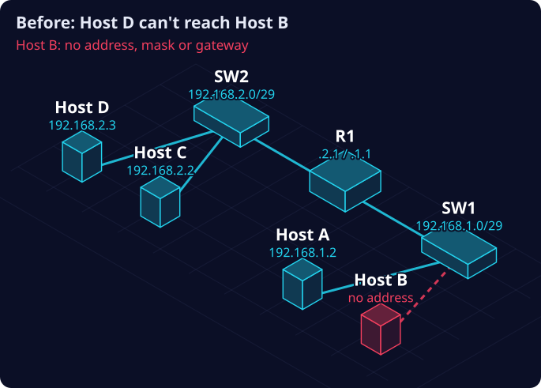
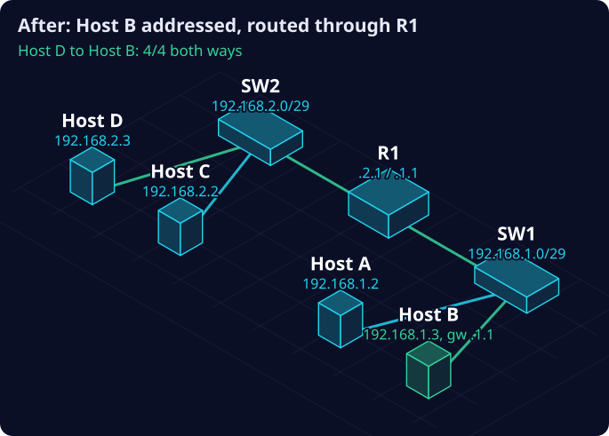

The Host Off the Books: when the right address exists nowhere as a record
If the only way to learn a device’s correct settings is to copy its neighbour, the device was never on the books.
What happened
This is a training lab, on a simulated network. It is not client work. The lab is Troubleshooting Fundamentals, Phase 1.5 from Witty Networks. The diagrams below are my own.
Two small networks (subnets), joined by a router. The top one has Host C and Host D on switch SW2. The bottom one has Host A and Host B on switch SW1. Router R1 sits between them. The ticket: Host D can’t reach Host B.
This was the first routed lab in the series. Crossing from one subnet to another needs a default gateway: the address of the router that carries traffic out. In the earlier labs, where everything sat on one subnet, a blank gateway was correct. Here, a blank gateway is silent: nothing errors, the traffic just never leaves.

Before. Host B had no address, no mask and no gateway.The technician’s view
Reading the two hosts. Host D’s settings were complete: 192.168.2.3, a /29 mask, gateway 192.168.2.1. Host B had nothing: no address, no mask, no gateway. A computer with no identity can’t reach anyone, and nothing tested from it can be trusted.
The split test. Was it only Host B, or was the router path broken too? I tested from Host A, a known-good computer on the same subnet as B. Host A reached Host D: 4 of 4 replies, with a TTL of 127. TTL 127 means exactly one router hop, so the path through R1 worked. And Host A’s gateway (192.168.1.1) is the gateway Host B would need, so that side of R1 was already proven. The fault was Host B alone.
The fix. I gave Host B 192.168.1.3, mask 255.255.255.248 (/29), gateway 192.168.1.1, reviewed before typing. I didn’t guess those values. I read them off Host A, its neighbour on the same subnet. I checked the settings with ipconfig before testing. Then I reproduced the ticket: Host D reached Host B 4 of 4, and, without being asked to, I tested the reverse direction too: 4 of 4. The lab’s checker passed.

After. Host B has its address and gateway, and traffic crosses R1 both ways.Where this happens for real
An illustration of the same fault in a real setting. It is not a real incident.
Picture a small electricity substation. The top subnet is the control room. The bottom subnet is out in the substation, and a router joins the two.
A new monitoring device is installed in the substation. It powers on and its lights look normal, but it was never given its network address, because nobody wrote down what that address should be. The control room can’t reach it.
Nothing raises an alarm. A device that never joined the network can’t report that it’s missing. Readings from that part of the substation simply never arrive, and operators make decisions without them. When someone finally fixes it, the quickest way to find the right address is the one I used: copy a neighbour. That works, but it means the correct value was never on record.
The same gateway setting is also a security point. Whoever controls where a device sends its traffic can sit in the middle and read it.
The architect’s view
From here on I’m asking: what if this were a real network?
The correct address for Host B existed nowhere as a record. I rebuilt it by reading a neighbour. The device was off the books. There was no authoritative list of addresses, and no step that checked a device’s live settings against an intended record, either before it went into service or on a schedule afterwards.
| # | Finding | Pillar | Lifecycle | Lesson |
|---|---|---|---|---|
| 1 | A device in service with no network identity, and nothing caught it | Metadata | Operate | Reality wins; the record is the finding |
| 2 | No address register; the correct value was knowable only from a neighbour | Metadata | Plan | If it isn’t documented, it didn’t happen |
| 3 | A blank gateway silently blocks traffic between subnets | Metadata | Operate | The device can’t reach the rest of the network |
| 4 | The fault was isolated by testing from a known-good neighbour, not from one device alone | Assurance | Maintain | Triangulation over trust |
| 5 | The same gateway setting is a place an attacker could intercept traffic (MITRE ATT&CK T1557) | Legal & Access | Operate | Detection pairs with prevention |
The control
AAR-1: Address Authority and Reconciliation. What it requires:
- Every device’s intended address, mask and gateway lives in an address register (IPAM). The register is the source of truth, not the diagram and not the device.
- A device is not in service until its live settings match its register entry.
- A scheduled scan compares live device settings with the register. Any difference is a logged finding.
- When they differ, reality is the finding: the register or the device is corrected under change control. The disagreement is never left standing.
- Every gateway entry must name the real router interface. A fake gateway, inserted by spoofing the network’s address service or poisoning its address tables, is prevented with switch features built for that (DHCP snooping and Dynamic ARP Inspection) and caught by the same scan.
How to prove it works
In this lab: ipconfig on Hosts D, B and A; a split-test ping from known-good Host A; ipconfig on Host B after the change; pings in both directions; then the lab’s checker.
On a real network: a scheduled scan of live settings, reconciled against the address register. Any mismatch is a finding. Planned, not built yet: a tool that reads a network diagram into a register, which gives that scan its starting point. My network fixer already does this reconciliation on a simulated network, using this exact case.
Takeaway
| On the network | In asset governance |
|---|---|
| Address register (IPAM) | The asset register, the source of truth |
| Default gateway | The asset’s declared route to the rest of the estate |
ipconfig / a live scan |
Inspecting the asset itself, the physical truth |
| Reading a neighbour to learn B’s address | Rebuilding a record from a neighbour because none exists |
| The lab’s “network state verified” checker | An outcome test, not a register audit |
A technical fix put one device back online. A register that every device is checked against solves the class of failure.
Audit trail
- Checked by me and by the lab’s automated checker. No independent reviewer, so self-verification is a stated limit.
- Open: no address register exists yet. AAR-1 is proposed, not built.